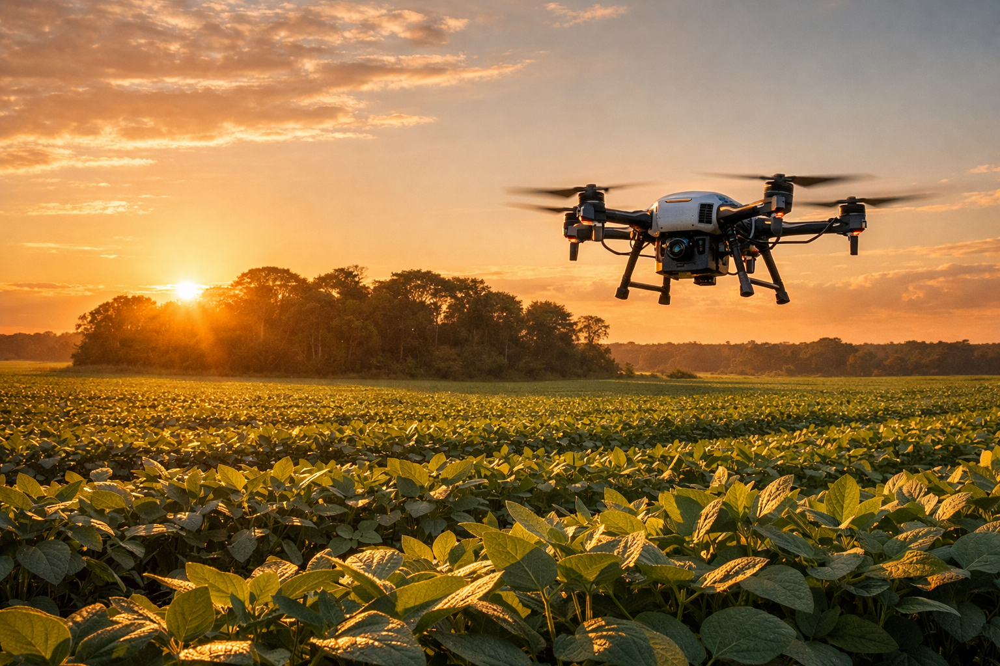
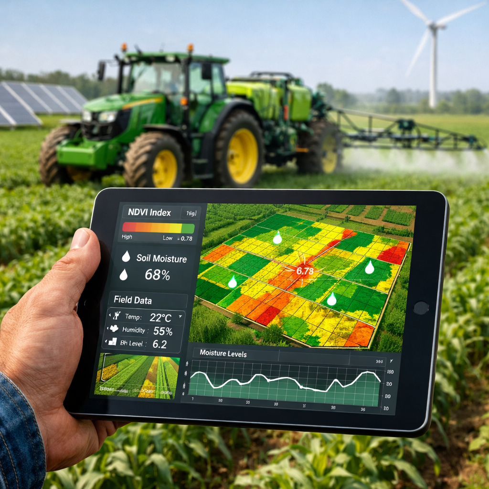
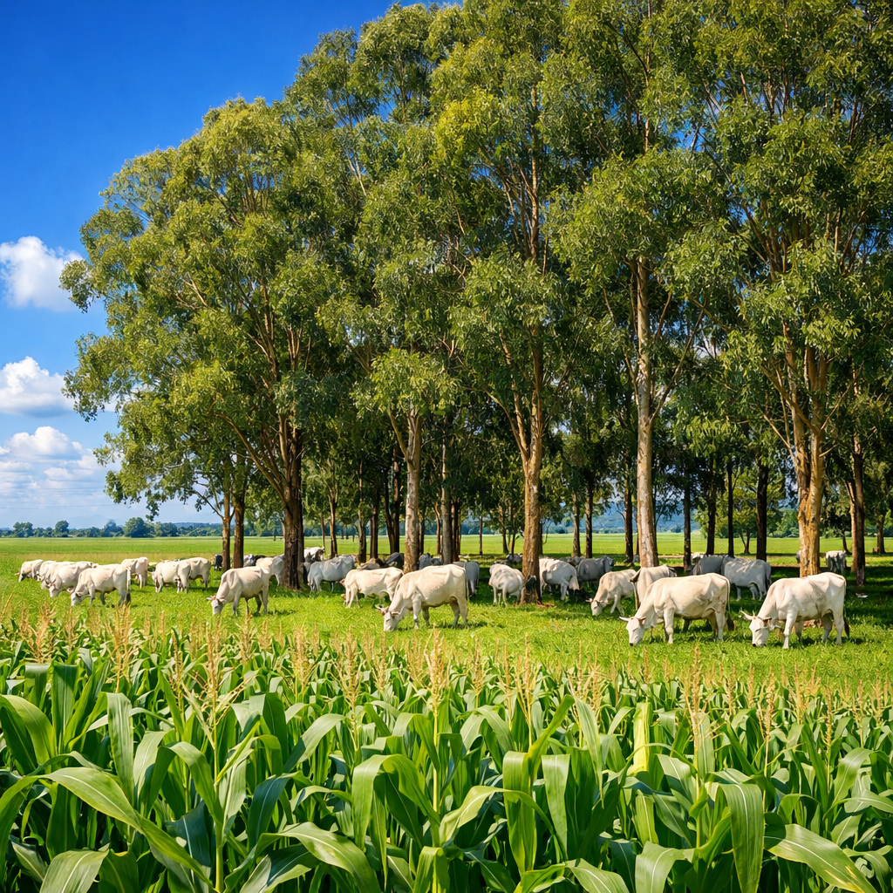

Equilíbrio entre Produção e Meio Ambiente
Saiba MaisO agronegócio brasileiro passou por uma transformação notável nas últimas décadas, evoluindo de práticas tradicionais para um modelo altamente tecnificado e eficiente. A tecnologia foi a força motriz dessa transformação, permitindo aumentar a produtividade da terra enquanto preserva os recursos naturais.
Início da modernização agrícola com a mecanização das operações e introdução de técnicas mais produtivas.
Construção de um agro próspero com foco em aumento de produtividade e expansão de cultivos.
Tecnificação intensa com agricultura digital, drones, sensores e sistemas de precisão (Agro 4.0).
Integração de sustentabilidade ambiental com produção eficiente e responsabilidade social.
O aumento da produtividade permite produzir mais alimento na mesma área de terra, reduzindo a necessidade de expansão agrícola e preservando florestas e ecossistemas naturais. Entre 1960 e 2017, houve um crescimento significativo de tratores por hectare, de 0,06 para 17,1, indicando forte modernização agropecuária.
O futuro do agronegócio é construído sobre quatro pilares fundamentais que garantem equilíbrio entre produção e preservação ambiental.
Uso de agricultura digital, drones, sensores e inteligência artificial para otimizar insumos, aumentar produtividade e reduzir desperdícios.
Recuperação de pastagens degradadas, sistemas de Integração Lavoura-Pecuária-Floresta (ILPF) e proteção de ecossistemas naturais.
Uso de biomassa, energia solar e outras fontes renováveis nas propriedades rurais para reduzir emissões de carbono.
Fortalecimento da agricultura familiar, segurança alimentar, geração de emprego e melhoria da qualidade de vida no campo.
As tecnologias emergentes estão revolucionando a forma como produzimos alimentos, tornando o agronegócio mais eficiente, sustentável e resiliente.
Aplicação de fertilizantes, defensivos e água apenas onde é necessário, utilizando mapas de variabilidade espacial e dados de sensores para otimizar recursos e reduzir impactos ambientais.
Uso de microrganismos benéficos para fertilização biológica e controle natural de pragas, reduzindo a dependência de produtos químicos sintéticos.
Sistemas de blockchain e IoT que garantem a origem dos produtos e certificam que viêm de áreas sem desmatamento ilegal.
Monitoramento aéreo de lavouras para detecção precoce de doenças, pragas e estresse hídrico, permitindo intervenções rápidas e eficazes.
Análise de big data para prognóstico de safras, otimização de rotações de culturas e previsão de demanda de mercado.
Integração Lavoura-Pecuária-Floresta (ILPF) que combina produção agrícola, pecuária e florestal de forma sinérgica e sustentável.
Conheça as práticas e tecnologias que estão transformando o agronegócio brasileiro em um modelo de sustentabilidade.



Indicadores que demonstram o crescimento e a modernização do agronegócio brasileiro.
| Indicador | 1995/96 | 2006 | 2017 | Crescimento |
|---|---|---|---|---|
| Produtividade Total dos Fatores (PTF) | 100 | 130 | 180 | +80% |
| Tratores por 1000 hectares | 0.06 | 5.5 | 17.1 | +28,400% |
| Potência média por hectare (cv) | 0.38 | 1.05 | 1.71 | +350% |
| Crescimento de Tratores (2006-2017) | - | Base | +50% | Modernização Acelerada |
O agronegócio do futuro será regenerativo, circular e resiliente às mudanças climáticas. Integra produção eficiente de alimentos com preservação ambiental, garantindo segurança alimentar para uma população mundial crescente sem comprometer os recursos naturais.
Com a combinação de tecnologias avançadas, práticas sustentáveis e compromisso com a responsabilidade ambiental, o Brasil está posicionado para liderar a transformação global do agronegócio.
Quer saber mais sobre agricultura sustentável e inovações no agronegócio? Conecte-se conosco!
Email: contato@agroforte.com.br
Telefone: (11) 3000-0000
Redes Sociais: